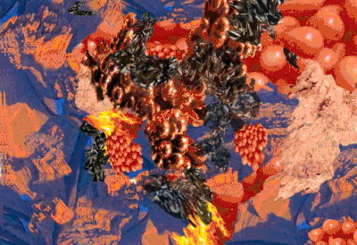
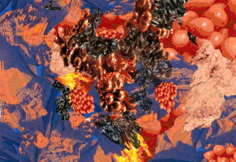

YOU COME FROM THE STARS, BLACK PEOPLE. MOVE AROUND. DO WHAT YOU NEED TO DO. LITERALLY FLOAT OUT HERE.
Jared Brown + Khadija Nia Adell
INITIAL RESPONSES: 1 If bodies of water are used as metaphors for life, then can we cleverly deconstruct the notion of ‘floating’ as opposed to being ‘taken under’? 2 Is socialism a distraction until we co-opt capitalism for our own personal benefit? 3 How much longer can we imagine the future before we start addressing that the future is now and we are in it? 4 In 2016, is it future to continue to think about ruling the world even with nuance if that means as ruler you’d be responsible for designing moral conduct? 5 How can we redesign the question if I ruled the world so that it still distributes hope and power to the one who is asked? 6 How do we construct images of rulership? 7 As people of color, can we ever have an association with rulership that isn’t tainted by the reminder of what the white body has done to African, Native and Indigenous people? 8 How do we enforce “order” in an ideal world without becoming oppressive? 9 When dealing with populations beyond numerable imagination, is it possible to find something that caters to everyone? Or is it more about providing equity and equality through resources so that everyone is able to make positive decisions for themselves? 10 The Manifest Destiny attitude behind rulership and ownership is a White-centric ideal that dragged the rest of the world into its messy fantasy. How does one come to the feeling and develop the drive to rule what was not born theirs?
Khadija Nia Adell: I’ve heard the song, like, I know it, but I’m reading the lyrics now. It’s interesting the way that lyrics can be timeless, when they’re talking about real issues. They are still so relevant.
Jared Brown: I wouldn’t say I’m a diehard Nas fan, but I appreciate a few albums of his, just as lyrical manifestos because he just sort of diagnosis what’s going on in his surroundings in a way that’s very clever but also to the point. I think he has a lot of clarity; he’s giving it a lot of thought, even just talking about life, being taken under by life, wondering about that and what his outcome will be. Its nothing new what this song is doing, talking about life as a fluid body of water... What does it mean to really be floating out here? What does it really mean to be taken under? That’s what it takes me to right away because he just starts it off with, “Life , I wonder...” but Nas, like any man, or anybody--it’s so contrived to think about if you ruled the world.
There’s something really powerful about redistributing that privilege so everyone feels like they have the right to think about the world in that way, but how much is it really doing for people if just everyone is thinking they need to take ownership and moralize codes for everyone else to live by? What is it really doing in 2016 for everyone to think that way? I don’t know if I really need to rule the world or if everyone needs to follow my ideologies. There’s still something super phallic about that in my mind. What do you think?
KA: I’m still holding on to the lyrics here. I was picking out different lyrics that he says and where he’s dropping wisdom that people may not know unless they really know a lot, or not even a lot, just beyond what we’re taught in Western education about Black history, and how it does not start with slavery. Referring to the history of world trade and travel that was occurring between Africa, Asia, and the Middle East before Europeans and the West in general got involved, he says this line, “Trips to Paris, I civilized every savage.” To me, I started to think about how that relates to Black and Brown bodies, Africans and Middle Eastern people, going over to Europe and civilizing them. The modern Black man (and woman), in some ways represents the image and the advances of the historical Black body, and what that means in the societal history of places like Spain and Italy. Many places in Europe have gotten their foundation of modernity, which became know as “Western” culture from the technological advances of cultural groups like the Moors and the Ottomans, etc.
You know, you can say what you want about it, but just like the feeling of being taken under... I can’t swim and I always have the fear of drowning, and I think that’s how we feel when certain things in our life don’t go however we thought we planned them. That feeling of being overwhelmed by emotion, it does feel like you’re drowning... I remember I had a panic attack about a month ago, you know, just feeling overwhelmed with everything that was happening in the news and in the world... And that feeling of drowning is so real.

Maybe being taken under by life is like a way of being domesticated by life itself and its conditions?
JB: In that way, I think of the Black body being civilized by a Eurocentric system, couldn’t that be almost synonymous with--because in a way being civilized is like being domesticated, I mean, I don’t like comparing ourselves to animals, but this idea of really domesticating a species and what it does to the genes and the psychology of that animal and how then that animal’s evolution kind of changes? I think applying that language of life as a body of water and being taken under vs. floating--maybe being taken under by life is like a way of being domesticated by life itself and its conditions? Maybe and if you allow yourself to be taken under that’s when you stop dreaming or stop kind of reaching for more or thinking you deserve more? I’m always looking up. I’m always looking at the sky and clouds and wondering what it would be like to just leave this world. That’s so much of my practice; figuring out how to take me and mines out of this world safely. To me, that feels like floating, like not being allowed to be taken under. But, there’s something weird in the Nas song that does seem like he’s negotiating respectability politics and how they exist in his lifestyle, or maybe that’s the music industry, but, you know, maybe everyone doesn’t need to wear designer clothes …
KA: That’s not everyone’s idea of rulership either. Those are things that we associate with it now.
JB: The huge elephant in the room is, I don’t know if sending Black Americans to Africa is gonna rectify that much trauma. Maybe I’m carrying by saying that, I just don’t know if... I’ve just been having intense experiences with my Blackness being calibrated by African bodies and it’s always something like, well “You’re not African boo boo,” “You’re not what we are.” I’ve had so many conversations that are an “us and them” conversation. It’s super weird. So, I don’t know if me going to Africa will make me feel… I obviously want to go--I can’t speak about the whole continent generally but--I think, that was the whole aesthetic of that time, you know Belly at the end, it’s like him and T-Boz and they move their kids to Africa and she ditched her blond bob for a head wrap…
KA: I think that’s true. You can’t deny that, yes, we are of the African Diaspora, but that doesn’t mean we understand life in Africa. Like as all Black people, we do all share that. But still, you can’t presume that we know life there and that we can assimilate to culture so easily there, because we still are American in culture in some ways, and those are very different. Even the cultures within the African countries are very different, but I agree with that--I do think we should travel, but it’s complicated, like everything.
JB: It would be really amazing if Black kids or folks in America could navigate this world as if it all belonged to them, but I still think it’s this kind of weird capitalistic idea to sell Black people on, of like, “You’re not free until you go to Africa,” I think that’s bullshit. What would it really be like if it was like, “Yo, you come from the stars Black people. This is your planet. Move around. Do what you need to do. Literally float out here.” Maybe that’s me projecting my nomadic ideas on everyone. Maybe that’s my simple thing. I mean, if I ruled the world, we’d all just be nomadic and have our tribes of people, specified to who can do what and how you guys work as a unit, not super specific, or for my tribe at least, for gender and color per say. It’d be more about how we can communicate with each other and who’s doing what. Like “Boo boo, you can build a house? Cool. Boo boo, you can kill the food? That’s what’s up.” I don’t know what I’d do in the tribe. I’d probably be the one to keep the morale up, be like “Yo yo, let’s keep walking,” I’d just be talking out my ass. I’d play some good Chicago house music to keep the spirits out, “Let’s keep moving.” We gotta keep trekking... We build our little temporary houses or whatever we gotta do. It’s just so exhausting to think about if I was the king, it feels like…
Ruling anything is about taking full control and responsibility over the nowness!
KA: It’s an act. It’s putting on a persona of what you think a king would be in the most ego sense…
JB: And it negates the idea that like, the future is now. Why do I have to wait 20 more years to start thinking about if I ruled the world? It’s 2016, the future is occurring right fucking now. Everything we do, we can kind do with some sort of agency to inform tomorrow. It’s not about waiting around for people to solve problems. Ruling anything is about taking full control and responsibility over the nowness! Whatever we feel needs to manifest, we have to do it now. We’re seeing climate change is affecting us more than ever right now. We have to do it now. I can’t really be distracted with ideas around moralizing a bunch of people. I just want to think about where we at right now. Right now, all I can think about is the planet. Girl, my birthday is in December and I was wearing a light jacket. It was a springtime birthday. It’s freaking me out.
KA: Yeah it’s messed up, a lot of things are off. I was thinking about what you said about ruling the world. There’s this fruitless aspect of it, or it can be, because always hope within everything can be positive--but hope in what, for what specifically? I remember having a conversation in thesis talking about the idea of utopia and I realized I don’t know if I even believe in that idea, or if I think it’s a positive idea to uphold, because it’s like you’re chasing something that is forever moving… It can be good but it can also be bad when that target is constantly changing. It’s never going to be what you strive for it to be. There’s always going to be parts that you can’t anticipate. I remember earlier, when we asked the question, if you ruled the world how would you still instill order? How would you still make decisions and judgments about penalties and how do you make people accountable for actions? All of those things are so negotiable and so up in the air but still exist in utopia. You can’t get rid of them just because it’s one person’s idea of the world.
JB: It just becomes this thing of like, you don’t fit into the vision or the mood board so you just get obliterated all together, and that’s still really oppressive. So even if it’s not like this crazy sci-fi thing, like everyone’s wearing taupe and if you don’t listen you gonna get like, lasered to death (totally Yeezy season 2). I would want less Yeezy Season 2 and more Jean Paul Gaultier in the Fifth Element. But that’s just me. I want to give some orange hair.
For me, what I can’t help think about is like, if you and me got to A&R a newer version of this song--we are curating the experience of the song--if you and I got to reprompt this If I Ruled The World, then who would we get to be on the track and would it still be called If I Ruled The World? How would we frame it? Because you can’t just get some 2016 artist and just be like “if I ruled the world,” that’s just so reductive. Who would we get and what would they be called?
(Utopia) Is never going to be what you strive for it to be. There’s always going to be parts that you can’t anticipate.
KA: I guess you have to think, there are so many levels to music that people listen to. Would they be mainstream artists that you’re considering or just people that you know of that you love? Like would Rihanna be on the track?
JB: Did you just say would Bono be on it?? Oh my god. Bono would definitely not be on it. Oh my god. Hell no. Nor would Jidenna. No Bono. No Jidenna. No way. Hell no.
KA: Have you seen those memes comparing him to The Game?
JB: I remember The Game was him for Halloween and looked so much better as Jidenna than Jidenna himself! I love The Game for so many reasons right now. Just go on his instagram, girl. I’m not gonna say anything else. Just go on The Game’s instagram and turn all the way up. Seriously. You know, I feel like the song title would be like, If I Was Actually In The Present...What Would I Do?? I don’t know if would have to be words. It wouldn’t have to be this didactic like, this is what we have to do... I would definitely want Erykah Badu to be scatting or something on there, a little bit of vocal. And maybe there could be a bunch of different chapters of this song we’re talking about. It doesn’t have to be like a three-minute experience. It could be like part one, part two, part five hundred….
KA: It would be a 10 minute long song. I would want to hear Jazmine Sullivan’s voice on there...I really like her voice.
JB: I’m here for Miss Sullivan for sure. I feel like what’s so awkward about If I Ruled The World too, is that the song and the idea, it’s still very like, oh, “I wanna be here for the people, woo woo woo.” But it just seems like socialism is spearheading the conversation until capitalism is cleverly co-opted for whoever is benefiting in that discussion and at that moment. I mean it’s like yeah Nas, I’m sure you care about the people, yeah Lauryn Hill I’m sure you care about the people, but let’s talk about how the music industry is still just an industry that’s about that coin, the numbers, the show... What does it mean if you’re still, at the end of the day, walking back to Tribeca, to your loft, with the checks that you’re getting? I mean, I don’t know how you get your coin, but the huge elephant in the political room is why is it that socialism is just a distracting conversation until the girls figure out how to get that Capital Coin? Why? What’s the issue? What’s the t? Why aren’t people really going there? It’s such a trending topic right now. Or maybe it always has been, “to be here for the people.” When you’re so far removed from the ground level and from the people who really internalize your words… I don’t feel like I can contact Lauryn Hill if I really need to dream and float and reach someone who understands me spiritually. I would have to pay. I would have to pay to even have a minute of her time and that would probably be all my savings.
 

Why is it that socialism is just a distracting conversation until the girls figure out how to get that Capital Coin?
KA: I feel like with a lot of celebrities, especially when it comes to social issues and the entire conversation about Black celebrities being there for black communities, and being voices of change and inspiration in times of need and even in “non times of need,” although when those are, really I’m not sure, that conversation always comes up about how are you using your funds to help the community and why so many of them feel trapped within the identity of celebrity and no longer know how to reach out or use their money as a source to educate themselves even further on what needs to be done?
JB: I was thinking about this conversation my family was having about Bill Cosby being a man that can be revered for being a humanitarian, which is like, yikes! You know, whatever that means, considering… But you know, being that Black figure that’s like, “Black men, pull your pants up, Black men, be better,” but you [Cosby] were driving around Philly in a limo. What would it have been like for you to have been accessible to the people you were trying to communicate with in the first damn place? Having commencement speeches, getting paid by Harvard… This is what I’m talking about. Everyone is “here for the people” but what’s the shade, though--the people that you were talking at, not to (!), didn’t really have access to you like that. And when they did, you were driving around in a limo! You weren’t getting out the limo. What does it mean to really step out of the celebrity and really be present with who you are speaking to?
KA: And that’s like, you’re a hypocrite and all this shit anyways.
JB: You know what, while we’re talking about violent men… On some level this song doesn’t really sit right with me anymore, when you find out that stuff about Nas treating his baby moms i.e. Kelis--I live for Kelis--I’m sorry, I don’t know if those things are real but who needs to lie about stuff like that? I really hope those things aren’t true. But someone talking about how Black people need to be better, but then you’re being violent to the mother of your child? That’s kind of freaky to me. I’m tired of celebrating that kind of celebrity right now. You’re such a good person because you’re doing this or this, but behind closed doors your treating people like shit? Humans are humans, I get it, but that representational self-congratulatory exceptional human being I’m just disillusioned by right now…
KA: I feel like that idea is just always being constantly broken every time you turn on media, every time something happens. We’re constantly hearing about how another celebrity or something being brought up from the past about someone who is revered in society that, is challenging the image of who they are and who people want to believe that they are. I think that’s such a main idea for people, not being able to separate their emotional attachment from people who play characters on television and who those people really are. Or just people who have musical personas--you know, being out on stage performing is a different form of self than just being at home with your spouse. And the way that you handle that intimate relationship, all of that, there’s so many different levels to people’s lives so to even believe for one second that the celebrity person that you see is that person 24/7 is ridiculous. Being attached to it when they die is kind of ridiculous to me too. I know people have emotional relationships with celebrities but I’ve never been like emotionally shattered when some celebrity has died cause I don’t know them…
JB: Well that’s where your wisdom comes from because I am one that, I always… I don’t know where it comes from… My first relationship to someone on that caliber, like many others, is Michael Jackson. As a kid Michael Jackson was so magical to me on every level. You know what’s so interesting, he has his sentimental moments and “We are the world” kind of moments, but him just being--I can’t remember how I was processing race, but I think on some level because I listened to so many eras of his music I knew he was a Black person--but, none the less, the way that he took up space in pop culture, it informed me that I could also take up the same amount of space if I wanna do that. I can totally do that, if Michael Jackson can do that. Maybe it’s a midwestern thing, Gary, Indiana is not too far from Chicago, and I’ve driven through it plenty of times. It’s a literal shit hole. Meaning it smells, it’s factory, it’s very abandoned, and the morale is low, but for his entire family to stay afloat and stay with their eye on some sort of prize, it’s always inspiring on some sort of level. All the scandals of him being a pedophile, it really did disrupt his legacy for me because that was also me learning for the first time what those words even meant. I was disturbed for a while, I was so heartbroken, or I think I just have a really specific relationship to pop culture. I do love it, but I wasn’t seeing the performativity in the way that I see it now. But I am guilty, I be getting upset sometimes when I find out stuff about people, I be like, really?
KA: I do too. I mean, I’m talking about extreme fandom, like really breaking down? Just being so romanticized and extreme. But, I mean, when Amy Winehouse died, I was sad. I had a little moment in my room, I lit a candle and I played her album.
JB: Yeah, I feel like it’s one of those conversations that has to be going back to the performative… Sometimes existing and just living out how you wanna live is a prompt enough for folks and you don’t have to do the didactic work, like serving them. I feel like Michael Jackson, just by being him and being so fantastic, in my opinion, so perfect--he danced well, he was stylish, and his videos were amazing… That’s probably my relationship to moving image because of Michael Jackson on some level, but just being great, it made me think about what being great means for myself and defining that for myself. So regardless of these allegations of him being a pedophile, because in no way am I trying to defend if that’s real or not real, I have no idea, you know, but like his presence being enough to challenge or make me think about what’s great for me is so much more of a role that a real king--I hate using that language--but that royalty can really do, as opposed to just being like, well when I die, and you have the opportunity to rule, what are you gonna do? That’s very Beyoncé on some level. I’m the queen, none of you guys are shit, and that’s a very specific thing too. But I feel like maybe being great out here is just being who you are and prompting everyone else to do that too? Ruling your own world and coexisting together? Or maybe that’s too romantic…
KA: Everything’s too romantic, everything’s not too romantic, everything should be romantic, and everything shouldn’t be romantic…
JB: Is that because we’re both fire signs? We’re both passionate girls…
KA: I mean, I think that’s beautiful still… To admire him as a person and allowing him to inspire the idea of change within yourself. That’s what I think celebrities should do. That’s the positive impact that should happen when they see other people achieving their goals and setting Black excellence standards for people. In general, even if that’s not what it’s recognized or marketed as.
JB: I feel like the best I can do right now in these streets, honey, is make sure I am moisturized and I’m treating my body nice and I am just radiating the kind of love that I have for myself and hope that other people can get into that for themselves. It just takes up too much headspace to think about if I ruled the world it’d be like this way, or that way… I mean, I can write a manifesto, but I just feel like who am I to even write that right now? I would just rather show you…
KA: Because that’s time still just taken away from actually doing it…
JB: Maybe it does feel like the world might end at any moment and I need every minute I can with the stars. I need every minute I can get with my life and I feel like sitting in and thinking about if the world was different... I wanna be in the present, the future is now; me taking up space, people remembering seeing us walking down the street, that just feels more important than any intellectual property I could create, but maybe I’m carrying. I don’t know.
KA: Any intellectual property you do create is still a part of that journey. You have the right to take up that space.
KHADIJA NIA ADELL - Born and raised in Miami, FL, transplanted to Baltimore in 2011, Khadija Nia Adell is a young multi-media artist, curator, writer and scholar invested in social activism and entrepreneurship. Through the many mediums of the arts, her combined written and visual arts practice aims to provoke our human consciousness through discussion, contemplation and action. Through the layering of contextual memory, African Diasporic history and manifold visual expression, her works acts as a response to the intricate relationships entangled in the geometry of the colonial and precolonial histories of now.
JARED BROWN - Jared Brown was raised in Chicago, Illinois. In May of 2014, he received his BFA for Video and Film Arts from the Maryland Institute College of Art. Through text, sampling, video, photography, installation, performance and sound, he re-purposes fragmented data to construct mythology about his origins and existence while creating archival content to serve as proof of existence. Dj sets, social media, short videos and guerilla style performances are all vehicles he uses to navigate the extremities of existing as a black celestial being in a post-apocalyptic Western civilization. Jared Brown currently lives and makes work in Chicago.